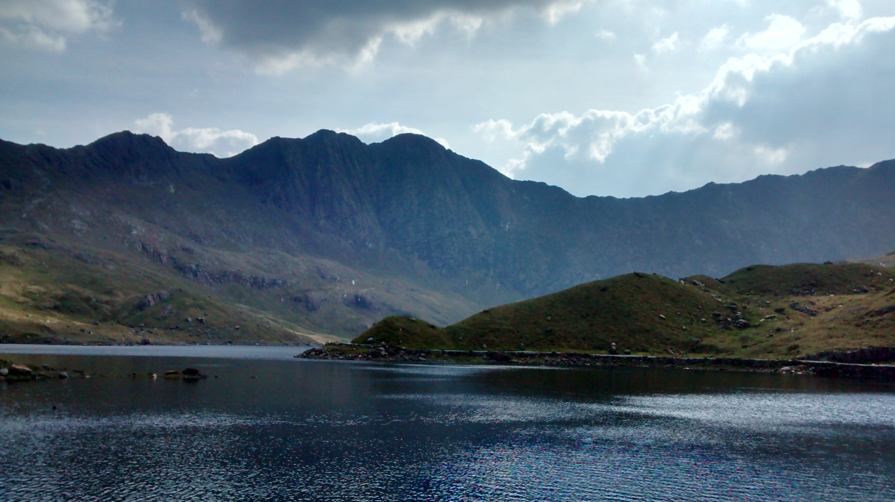

 Manchester and Salford
 Cornwall
Cornwall Scotland
Scotland Guangzhou
Guangzhou
I started out a bit dismissive of photography, preferring to enjoy moments rather than reach for a camera or a phone, but I found myself using it more and more throughout a long trip in Eurpoe to help myself remember the details more and stop one marvel blurring with the next. This progressed to trying to find a shot that best captured the moment, then to going out of my way looking for a better shot. This year I've started using film photography giving me new reasons to explore the world.
Click a picture below to see a few from the same area.